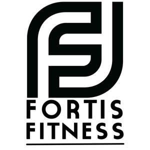

Trade Mark Journal No.2025/037 12 September 2025
UK00004257533 1 September 2025 (41)

- Class 41
- Health and fitness training; Sports and fitness; Exercise and fitness classes; Exercise [fitness] training services; Fitness and exercise training services; Fitness and exercise instruction; Health club services [health and fitness training]; Physical fitness consultation; Physical fitness centres; Physical fitness instruction; Physical fitness training services; Sports and fitness services; Fitness training services; Physical fitness tuition; Personal trainer services [fitness training]; Personal fitness training services; Providing fitness and exercise facilities; Exercise [fitness] advisory services; Conducting physical fitness conditioning classes; Health and wellness training; Consultancy relating to physical fitness training; Training services relating to fitness; Conducting fitness classes; Physical fitness assessment services for training purposes; Provision of health club [physical exercise] facilities; Physical fitness instruction for adults and children; Conducting training sessions on physical fitness online; Aerobics training services; Gym activity classes; Health club services; Aerobic and dance facilities; Sports training; Training in sports; Physical health education; Providing health club and gymnasium services; Training related to nutrition; Exercise classes; Supervision of physical exercise; Gymnasium services relating to weight training; Providing of training in the field of health care and nutrition; Physical training services; Strength and conditioning training; Personal coaching [training]; Life coaching (training); Training services relating to health and safety; Recreation and training services; Providing instruction and equipment in the field of physical exercise; Training of sports players.
carl dean